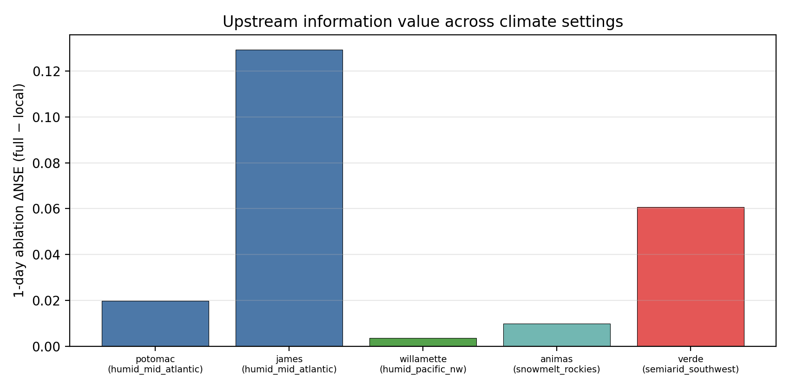
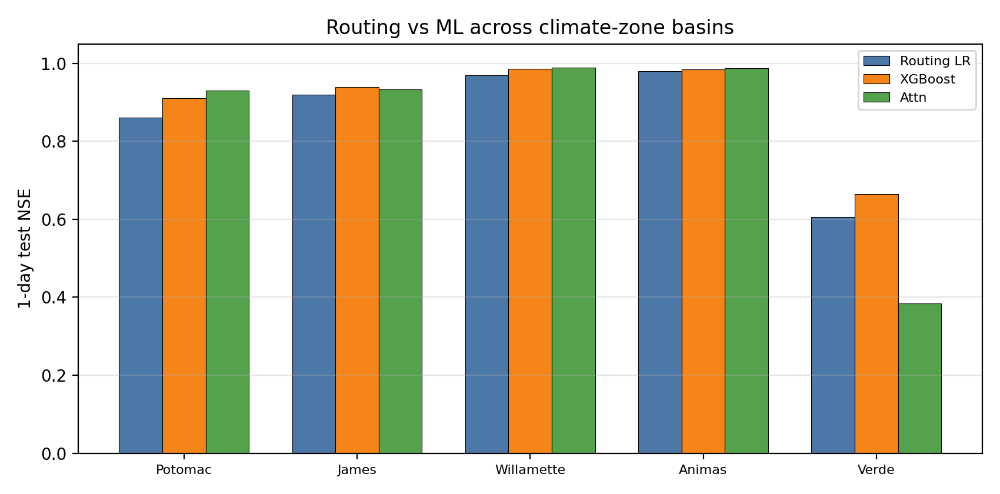
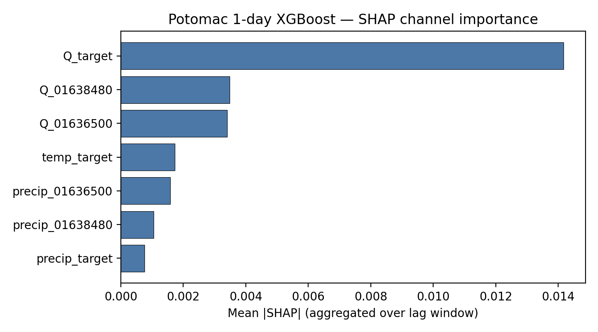
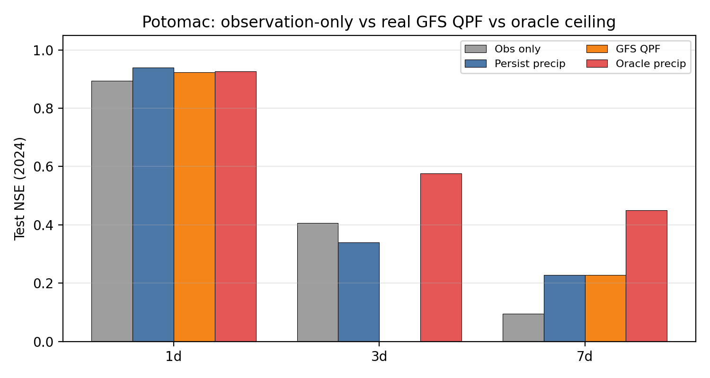

Public, reproducible experiments on how upstream gauges, machine learning, and precipitation foresight partition short-range forecast skill — across Potomac/James and additional climate-zone basins.
LSTM-Attention on Washington, D.C. outlet (test 2021–2023).
Largest next-day upstream-gauge information gain among humid basins.
Humid Atlantic / Pacific NW, snowmelt Rockies, semi-arid Southwest.
不把“上游有用”当作新颖点，而量化：相对滞后上游线性路由，机器学习还剩多少增益； 何时需要降水预见（QPF/oracle）；以及该信息价值在不同气候带是否成立。
| Basin | Climate | Routing NSE | Attn NSE | Ablation ΔNSE |
|---|---|---|---|---|
| James | humid mid-Atlantic | 0.92 | 0.93 | +0.13 |
| Verde | semi-arid SW | 0.61 | 0.38 | +0.06 |
| Potomac | humid mid-Atlantic | 0.86 | 0.93 | +0.02 |
| Animas | snowmelt Rockies | 0.98 | 0.99 | +0.01 |
| Willamette | humid Pacific NW | 0.97 | 0.99 | ≈0 |




git clone https://github.com/Az0998/hydro-ml-paper.git
cd hydro-ml-paper
pip install -r requirements.txt
python download_data.py
python run_experiment.py
python run_climate_transfer.py
python run_shap_explain.py